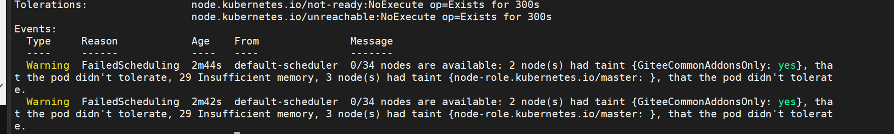

Contents
资源调度-为Pod设置计算资源¶
容器运行时（container runtime）通常会提供一些机制来限制容器能够使用的计算资源的大小，例如，最多可以使用多少CPU或内存。如果超过计算资源的限制，容器就会被终止。
例如，在Docker中，通过docker run命令中的–cpu-shares、–cpu-quota、–memory等参数，可以指定容器对CPU和内存的使用限度。同样，在Pod模板中也提供了这个功能，Pod模板中的相关参数如下所示。
apiVersion: apps/v1
kind: Deployment
metadata:
name: exampledeployment
spec:
replicas: 3
selector:
matchLabels:
example: deploymentfornginx
template:
metadata:
labels:
example: deploymentfornginx
spec:
containers:
- name: nginx
image: nginx:1.7.9
#资源限制和请求的设置
resources:
#资源限制的设置
limits:
#CPU的限制，单位为CPU内核数，将用于docker run --cpu-quota 参数；
#也可以使用小数，例如0.1，它等价于表达式100m（表示100milicore）
cpu: "600m"
#内存限制，单位可以为MiB/GiB/MB/GB，将用于docker run --memory参数，
memory: "500Mi"
#资源请求的设置
requests:
cpu: "100m"
memory: "100Mi"
ports:
- containerPort: 80
requests和limits属性从不同维度保证Pod的资源占用情况。
requests表示容器至少可获得的资源大小，也许容器实际上不会使用这么多资源，但Kubernetes在 调度时会以此为参照，保证容器能调度到至少满足这些资源的机器上。
而limits表示容器能够使用资源的最大限度，如果超过这个值，容器将被终止。
本节用两个示例演示limits和requests的功能。
examplepodforresource.yml
apiVersion: v1
kind: Pod
metadata:
name: examplepodforresource
spec:
containers:
- name: examplecontainerforresource
image: vish/stress
imagePullPolicy: IfNotPresent
args: ['-mem-total','150Mi','-mem-alloc-size','5Mi','-mem-alloc-sleep','1s']
resources:
limits:
cpu: "1"
memory: "100Mi"
requests:
cpu: "200m"
memory: "50Mi"
在本例中，我们定义了一个名为examplecontainerforresource的容器，
其资源上限分别为1个CPU内核和100MiB（1MiB=2 20 B，1MB=10 6 B）内存空间，请求的资源为200milicore CPU和50MiB内存空间。
该容器使用的镜像为vish/stress，这是一种专门用来测试容器性能和压力的工具镜像。在容器启动时，会分别传入多个参数。第一组参数为’-mem-total’,‘150Mi’，这表示将容器的内存占用量增加到150MiB，这将超过设置的最大值100MiB，但它不是一次达到150MiB的。第二组参数为’-mem-alloc-size’,‘5Mi’，这表示从0开始每次增加5MiB的内存占用。
第三组参数为’-mem-alloc-sleep’,‘1s’，这表示增加内存占用量的时间间隔为1s。结合前面的参数，表示每秒增加5MiB的内存占用量，直到占用150MiB的内存空间。
这个容器在创建初期不会有任何问题，和正常容器一样。但创建差不多20s后，追加的内存就会超过100MiB的限制。我们先应用模板，看看实际效果。
创建Pod。
$ kubectl apply -f examplepodforresource.ym
接下来，通过$ kubectl get pod examplepodforresource命令查看Pod的运行情况，直到状态变为Running
$ kubectl get pod examplepodforresource
NAME READY STATUS RESTARTS AGE
examplepodforresource 1/1 Running 0 60s
此时如果使用$ kubectl describe pod examplepodforresource命令可以查看Pod的详细信息。在容器信息部分可以看到其资源设置情况
最开始容器还能正常运行，但运行超过20s以后，因为压力测试工具不断施压，当其内存占用量超过了limits属性中设置的100MiB后，容器会被自动终止。此时通过$ kubectl get pod命令查询容器状态，可以发现其状态变为OOMKilled，READY变为0。基于容器的重启策略，容器会不断重启。
$ kubectl get pod
NAME READY STATUS RESTARTS AGE
examplepodforresource 0/1 OOMKilled 3 90s
最后，通过$ kubectl get pod examplepodforresource -o yaml命令查看详情，可以发现容器是由于超出资源限制而被终止的
kubectl get pod examplepodforresource -o yaml
apiVersion: v1
kind: Pod
metadata:
annotations:
kubectl.kubernetes.io/last-applied-configuration: |
{"apiVersion":"v1","kind":"Pod","metadata":{"annotations":{},"name":"examplepodforresource","namespace":"default"},"spec":{"containers":[{"args":["-mem-total","150Mi","-mem-alloc-size","5Mi","-mem-alloc-sleep","1s"],"image":"vish/stress","imagePullPolicy":"IfNotPresent","name":"examplecontainerforresource","resources":{"limits":{"cpu":"1","memory":"100Mi"},"requests":{"cpu":"200m","memory":"50Mi"}}}]}}
creationTimestamp: "2022-04-19T05:34:27Z"
name: examplepodforresource
namespace: default
resourceVersion: "82218112"
selfLink: /api/v1/namespaces/default/pods/examplepodforresource
uid: 674b9153-8541-4a79-8b81-e1efba17984d
......
lastState:
terminated:
containerID: containerd://6befbf056b338e8d2947f3265e8a5e56084c7efa12953fe2e7f9848017e8ed01
exitCode: 137
finishedAt: "2022-04-19T05:37:21Z"
reason: OOMKilled
startedAt: "2022-04-19T05:37:03Z"
创建另一个示例，首先，创建examplepodforerror.yml文件
examplepodforerror.yml
apiVersion: v1
kind: Pod
metadata:
name: examplepodforerror
spec:
containers:
- name: examplecontainerforerror
image: busybox
imagePullPolicy: IfNotPresent
command: ['sh', '-c']
args: ['sleep 3600']
resources:
requests:
memory: "500Gi"
本例中的Pod和之前相比并没有什么特别之处，但设置了它的resource.requests.memory属性，其值为500GiB（1GiB=2 30 字节，1GB=10 9 字节），目前一般计算机应该不会有这么大的内存资源。我们先应用模板，看看实际效果。
执行以下命令，创建Pod。
$ kubectl apply -f examplepodforerror.yml
通过$ kubectl get pod examplepodforerror命令查看Pod的运行情况，可以发现它的状态一直都是Pending
$ kubectl get pod examplepodforerror
NAME READY STATUS RESTARTS AGE
examplepodforerror 0/1 Pending 0 <invalid>
接下来，通过$ kubectl describe pods examplepodforerror命令，查看Pod的详细信息，在底部的Events区域可以发现造成Pending的原因
$ kubectl describe pods examplepodforerror
如图所示，集群中没有任何一台机器能满足该Pod的内存要求。
